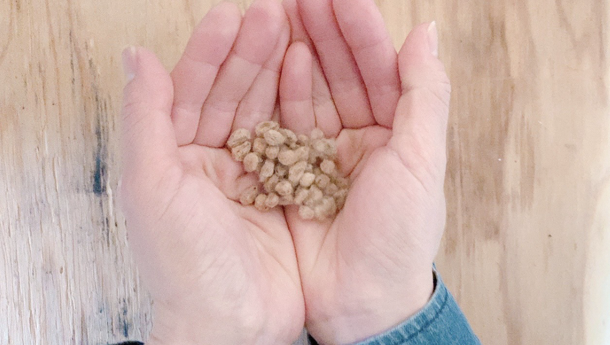
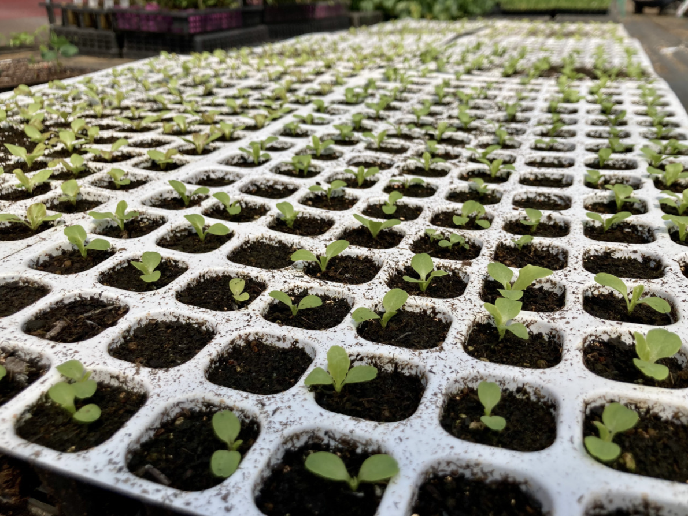

2022.03.30
Gaps
Gap Day プログラム「オーガニックコットンのタネを一緒に蒔こう！」
Gap Studio の「地球をもっと楽しもう」をコンセプトに、
今回は“オーガニックコットンのタネ”の成長過程を通して、土に触れ、
みんなでいのちが巡りあうことを分かち合いたいなぁとイベントを立ち上げました。
このイベントは、ジュエリー作家のlayosoraさんとのコラボ企画です。
ストーリー
わたしは頭で考えすぎて疲れている時は土に触れ
多様な微生物と戯れ
太陽の暖かさを肌で感じ
自然の中に身を置くことで
ニュートラルな状態になれます。
四角大輔さんのメソッドを学び
森を歩いたり、自然に近い暮らしをするようになり、本当に実感しています。
「願いが叶うなら私は苺になりたい。
空気と水から果物をつくり
それを生きものたちと分かち合いたい。
太陽の光の下で静かにたたずみながら
この星の上での役割を果たしたい」
(ロビン.ウォール.キマラー 意訳)
この言葉は、わたしが今受講している
たねの授業の先生のインスタで投稿されていて
なんて美しい言葉なのだろう。と
わたしも何かのお役に立てることはあるかな...と考えていた中で
このようなコトならシェアすることができるのではないか！と立ち上げました。
さのけん、フォローありがとうございます。
内容
一緒にオーガニックコットンのタネ蒔きから、いのちの巡り合いを感じてみませんかー？
タネの成長段階などのシェアはどうしようかな..
とまだ未定で、見切り発車の状況ですが
たね蒔きの時期がすぐそこまできてますので
とりあえず、今回は種を蒔くことだけのone day（Gap Day） 企画になります！
なにせわたしも初めてなので
どうなるかわからないです〜。笑
ただ、構想としては
採れたオーガニックコットンから糸を紡ぎ
同じ畑で採れた野菜や近くで拾った草木で
染色して、、何かアートに繋げられたらいいなぁ〜
と思っています！
お子様もぜひご参加ください♪♪
たね蒔きから..
一緒に感動を味わいたいです！
開催日時
4月10日（日）10:30〜15:00（予定）
＜雨天の場合＞
翌週の16日（土）か17日（日）に延期します。
さらに両日とも雨の場合は中止とします。
開催場所
埼玉県小川町の畑（最寄駅は東武東上線小川町駅です）
そこから車で送迎します。
募集人数
8名（主催の2人と畑主のシゲさん含む）
料金
イベント参加費：1,500円（事前払い）
ランチ代：500円〜1,000円（現地払い）
（ランチは、土地の素材を使った畑でのBBQを考えています。）
※イベント参加費のお支払い方法は、銀行振込またはPayPayでお願いします。
→ご希望をうかがい、個別に対応させていただきます。

それでは春の畑でお待ちしてます！